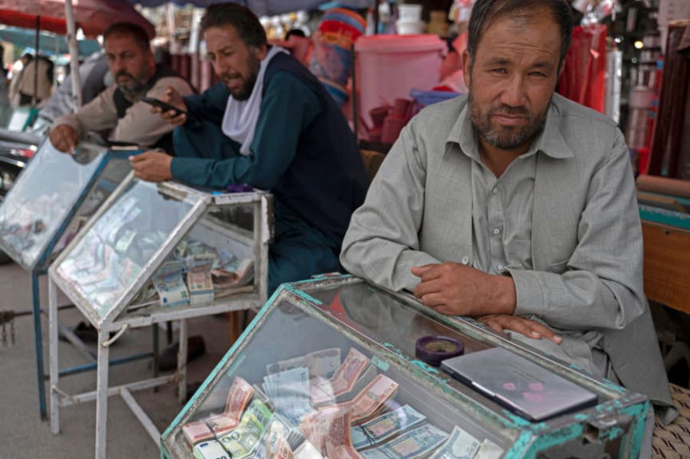
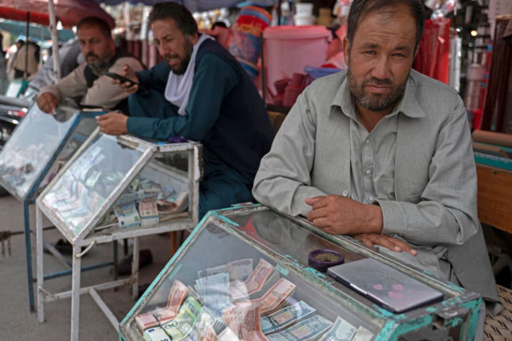

Police Shut Down 16 Cryptocurrency Exchangers in Afghanistan
~2 min read | Published on 2022-08-25, tagged Exchange, Sanctioned using 305 words.
Police in Afghanistan shut down 16 cryptocurrency exchangers in the country’s Herat province in response to complaints about scams and pyramid schemes.
“Da Afghanistan’s Bank stated in a letter that digital currency trading has caused lots of problems and is scamming people, therefore they should be closed. We acted and arrested all the [em]exchangers[/em] involved in the business and closed their shops,” said Sayed Shah Sa’adat, head of the counter-crime unit of Herat police.
Authorities in Afghanistan have been receiving hundreds of complaints every month about fraudulent cryptocurrency exchanges and pyramid schemes.

The local independent outlet Ariana reported that Afghanistan’s central bank outlawed cryptocurrency trading in June 2022.
Ghulam Mohammad Sohrabi, head of Herat’s money changers’ union, said:
“Our people are not familiar with digital currencies, their accounts are not the same as bank accounts of dollars, euros and Afghanis; Because there are no documents. On this account, until our people know, don’t use it. Digital currency accounts are located outside the country and are purchased from companies; Our people do not know. It would be better if they don’t use this money, because this currency has just entered the market and is highly variable.
The Herat Currency Exchange Association agreed that digital currencies are reliable in other markets and are in use by other countries.
Ariana quoted two residents of Herat who agreed with the government’s actions:
“Digital currency is a new phenomenon which is not used in Afghanistan, therefore the process should be monitored by the government so that there will be no scamming and people can make better investments,” said Shahram, a resident in Herat.
“The government should monitor and prevent digital currency activities, otherwise assets leave Afghanistan. People also suffer losses because syndicates are involved and rates fluctuate daily,” said Mawla Alizada, a Herat resident.
“Da Afghanistan’s Bank stated in a letter that digital currency trading has caused lots of problems and is scamming people, therefore they should be closed. We acted and arrested all the [em]exchangers[/em] involved in the business and closed their shops,” said Sayed Shah Sa’adat, head of the counter-crime unit of Herat police.
Authorities in Afghanistan have been receiving hundreds of complaints every month about fraudulent cryptocurrency exchanges and pyramid schemes.

Afghan money changers
The local independent outlet Ariana reported that Afghanistan’s central bank outlawed cryptocurrency trading in June 2022.
Ghulam Mohammad Sohrabi, head of Herat’s money changers’ union, said:
“Our people are not familiar with digital currencies, their accounts are not the same as bank accounts of dollars, euros and Afghanis; Because there are no documents. On this account, until our people know, don’t use it. Digital currency accounts are located outside the country and are purchased from companies; Our people do not know. It would be better if they don’t use this money, because this currency has just entered the market and is highly variable.
The Herat Currency Exchange Association agreed that digital currencies are reliable in other markets and are in use by other countries.
Ariana quoted two residents of Herat who agreed with the government’s actions:
“Digital currency is a new phenomenon which is not used in Afghanistan, therefore the process should be monitored by the government so that there will be no scamming and people can make better investments,” said Shahram, a resident in Herat.
“The government should monitor and prevent digital currency activities, otherwise assets leave Afghanistan. People also suffer losses because syndicates are involved and rates fluctuate daily,” said Mawla Alizada, a Herat resident.
The non-occupation government of Afghanistan holding a mock funeral for the Western 'nation builders'